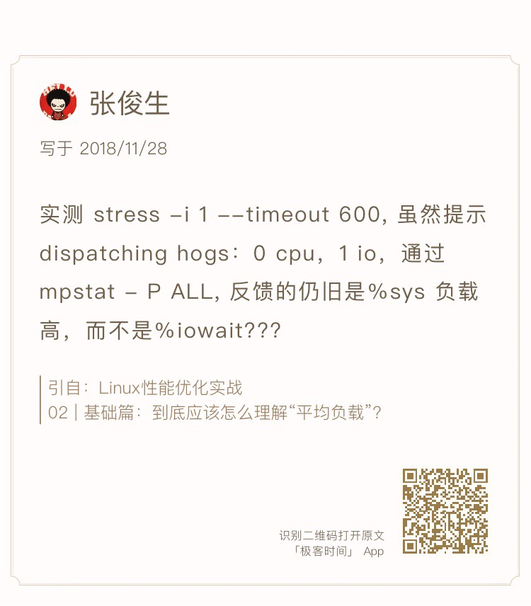
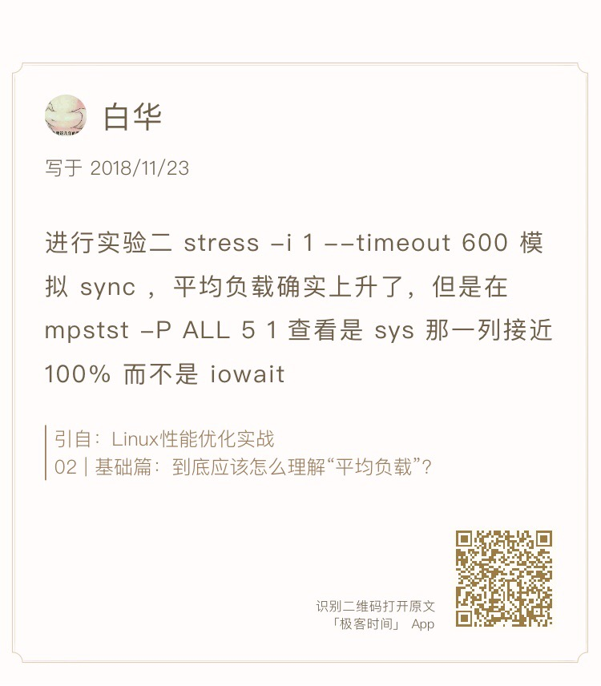
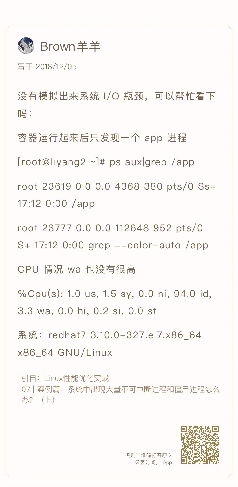
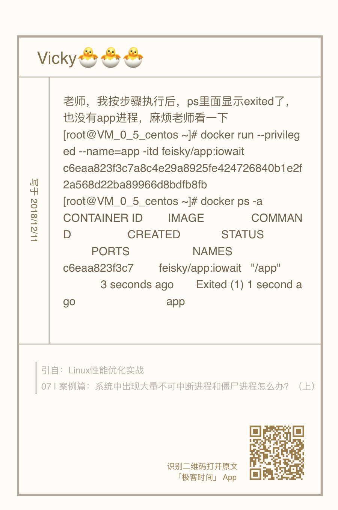
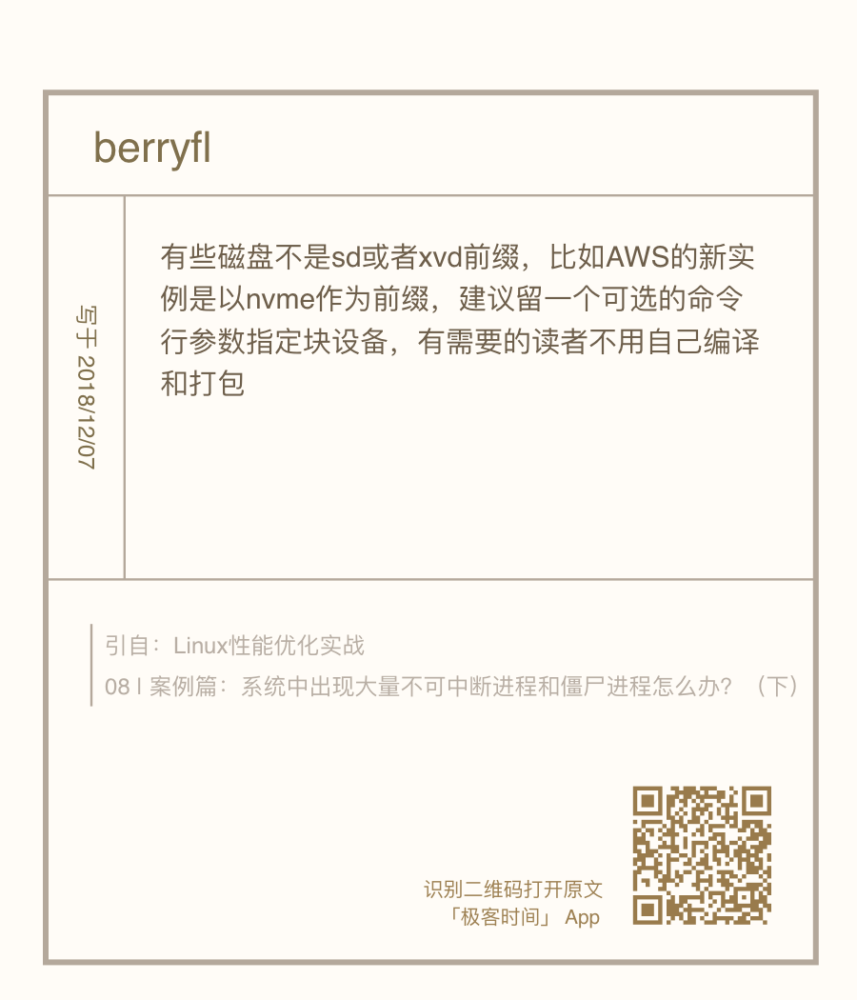
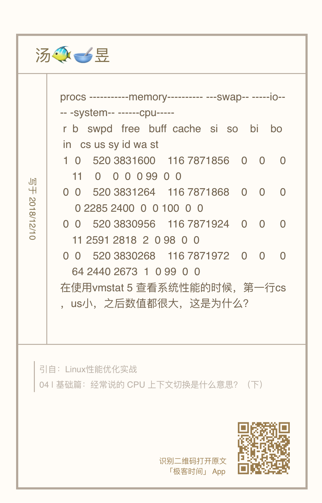

问题 1：性能工具版本太低，导致指标不全
性能分析的学习，建议要用最新的性能工具来学。新工具有更全面的指标，更容易上手分析。这个绝对的优势，可以让你更直观地得到想要的数据，也不容易让你打退堂鼓。
最好试着去理解性能工具的原理，或者熟悉了使用方法后，再回过头重新学习原理。这样，即使是在无法安装新工具的环境中，你仍然可以从 proc 文件系统或者其他地方，获得同样的指标，进行有效的分析。
问题 2：使用 stress 命令，无法模拟 iowait 高的场景


可以运行下面的命令，来模拟 iowait 的问题：
# -i的含义还是调用sync，而—hdd则表示读写临时文件
$ stress-ng -i 1 --hdd 1 --timeout 600
问题 3：无法模拟出 RES 中断的问题
分析：重调度中断是调度器用来分散任务到不同 CPU 的机制，也就是可以唤醒空闲状态的 CPU ，来调度新任务运行，而这通常借助处理器间中断（Inter-Processor Interrupts，IPI）来实现。
：：：：这个中断在单核（只有一个逻辑 CPU）的机器上当然就没有意义了，因为压根儿就不会发生重调度的情况。
拿 pidstat 中的 %wait 跟 top 中的 iowait% （缩写为 wa）对比，其实这是没有意义的，因为它们是完全不相关的两个指标。
- pidstat 中， %wait 表示进程等待 CPU 的时间百分比。
- top 中 ，iowait% 则表示等待 I/O 的 CPU 时间百分比。
差异化：：：不同版本的 sysbench 运行参数也不是完全一样的
- Ubuntu 18.04
- $ sysbench –threads=10 –max-time=300 threads run
- Ubuntu 16.04
- $ sysbench –num-threads=10 –max-time=300 –test=threads run
问题 4：无法模拟出 I/O 性能瓶颈，以及 I/O 压力过大的问题



问题 5：性能工具（如 vmstat）输出中，第一行数据跟其他行差别巨大

：：：在碰到直观上解释不了的现象时，要第一时间去查命令手册。如 man vmstat
The first report produced gives averages since the last reboot. Additional reports give information on a sam‐
pling period of length delay. The process and memory reports are instantaneous in either case.
也就是说，第一行数据是系统启动以来的平均值，其他行才是你在运行 vmstat 命令时，设置的间隔时间的平均值。另外，进程和内存的报告内容都是即时数值。